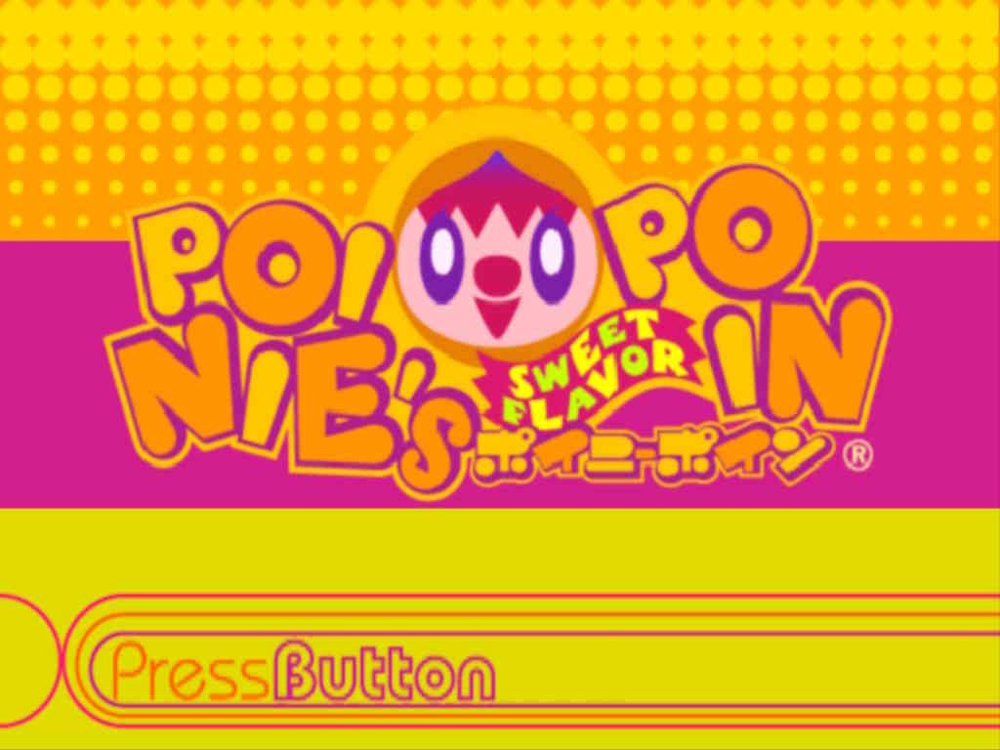
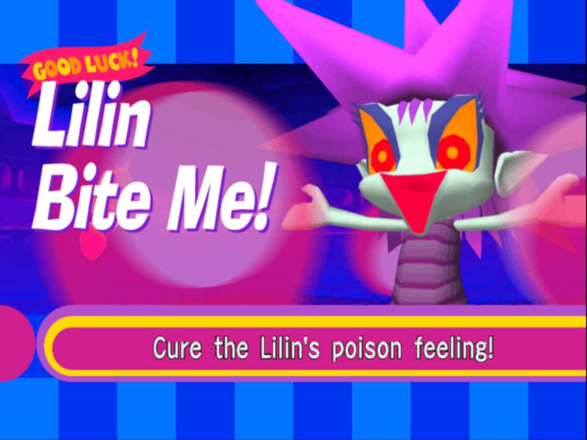
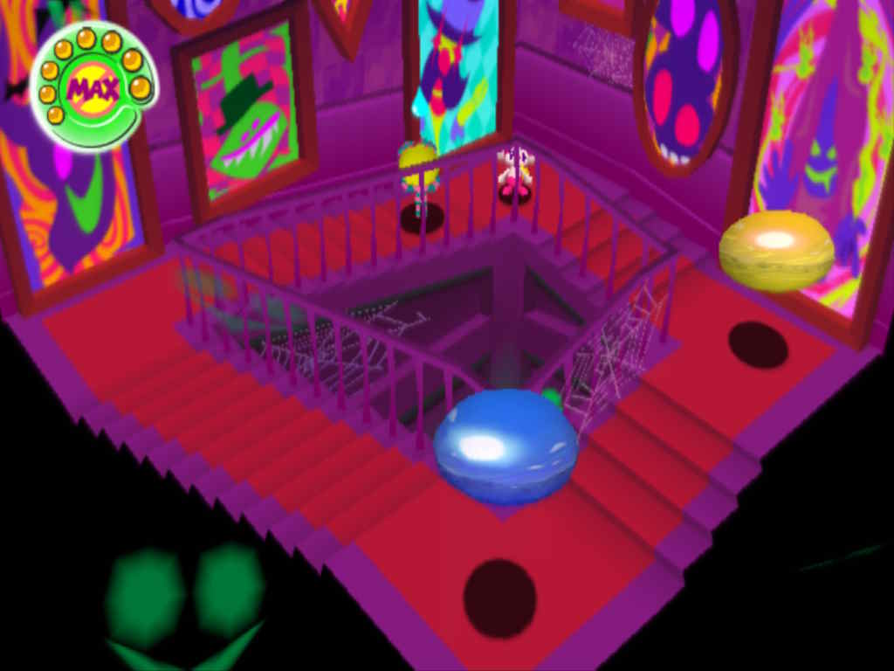

Poinie's Poin (PS2)
Poinie's Poin is a cute and stylish 3D platformer for the Playstation 2. It was released only in Japan, but surprisingly has a full English localization including a dub. I came across some GIFs of this game from a Tumblr aesthetic blog back in the day and the game just looked so quirky and unique that I knew I had to play it one day.


The main gimmick of Poinie's Poin is manipulating "poins", floating orbs of emotional energy. You can use them as platforms or throw them at enemies to manipulate their emotions. To "defeat" enemies in the game, you want to throw the poin color that matches their emotional state, which neutralizes their emotions and calms them down. Matching colors and throwing poins is how you solve most of the puzzles in this game.
One of the highlights of the game is the boss fights. This game is pretty short and easy, so I appreciated the challenge ramping up at least a little bit during these boss battles as you usually have to manage poins, enemies on the field, and chipping away at the boss in a unique way each time.
The platforming is generally pretty competent, and I kind of wish there were more if it in the game since it's overshadowed by the bosses, but the game is held back by a pretty brutal camera. Despite launching on the Playstation 2, it does not take advantage of the Dualshock 2's dual analog sticks for camera control. Instead there's only a button to center the camera behind Poinie and another button that locks the camera in this "follow" mode. The hardest opponent in this game is not the enemies or bosses; it's the camera!


Did I mention the game's short? Yeah it's only around 4-5 hours long. My playthrough missed a couple of optional objectives, but I think that only would have bumped up the playtime by around 20 minutes at most. This is one of those games where it's obvious the developers initially planned for way more content but needed to ship the game. There are plenty of areas in the the game's hub world that are visually distinct and show up on the world map but do nothing. One particular story beat feels particularly awkward when it seems like it's building up to a level and then... just brings you back to the hub world with the story beat magically resolved.
Despite these issues, I enjoyed the small portion of the game that the developers actually finished. The stages all feel pretty unique with memorable characters and truly fantastic music (...well, at least when the children aren't singing in it!). The overall aesthetic presentation is pretty great. To me it feels like this game really wants to be like Parappa The Rapper, with the colorfully cartoonish graphics, English dialogue, and even similar story beats, but it has its own unique spin on this cartoony colorful aesthetic.


Overall, I enjoyed my time with Poinie's Poin but definitely had issues with it. I wish it were longer, though I'm not sure how much more they could have mechanically gotten out of the poins. Plus more hours with that camera would have been quite annoying. If you're looking for a short and cute game to play, maybe try giving this one a go.
Final Rating: 3/7 - A decent game, but with some major issues. If you're a 3D platformer fan or love the aesthetics, I recommend it!
Recipient of the "I would have loved this more as a kid" Award: This game would have rewired my brain if I played it as a kid. I wouldn't have noticed how short it was because I'd probably mess around in the hub world for hours and replay it many times.
Back to Media Log